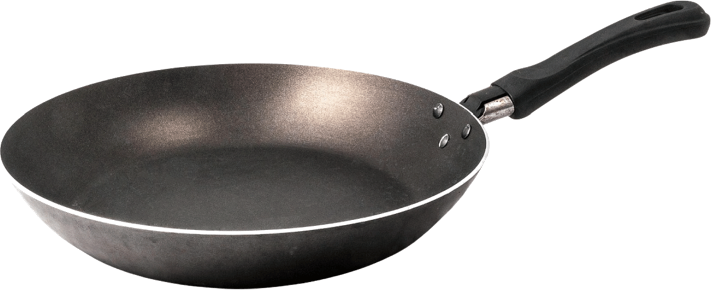

🍳 🥄 🔪
그램
그램
셰프
재료의 양을 재고, 셰프에게 평가받자!
시작하기
QR 코드
QR 코드
그램
그램
셰프
재료의 양을 재고,
셰프에게 평가받자!
창작 요리 만들기
재료를 마음대로 골라 나만의 요리를 만들어요
실제 요리 도전
세계 여러 나라의 요리를 레시피대로 만들어 봐요
처음으로
창작 요리
레시피 힌트

총 원가
0원
총 무게
0g
재료
0가지
내 재료
모두 비우기
mL(부피)는 g으로 바꿔 무게를 합쳐요. 예) 간장 100mL ≈ 115g
요리 제출하기
처음으로
실제 요리 도전
요리를 제출해요
1. 어떤 요리인가요?
2. 요리 이름을 지어 주세요
돌아가서 고치기
심사 받기
재료로 돌아가기
조리하기
내 재료 계산표
총 원가
원
총 무게
g
kg
돌아가기
계산 도우미 (정답 보기)
건너뛰기
확인하고 제출
📱↻
태블릿을
가로
로 돌려주세요